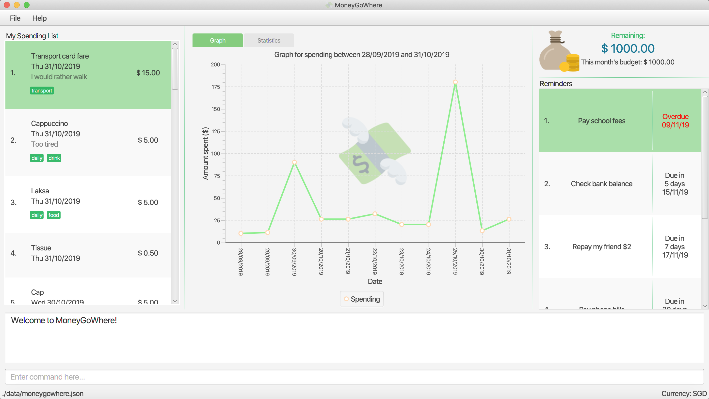

About the Project
MoneyGoWhere is a finance application built by my team and I as part of a Software Engineering Project. It was morphed from a basic command line interface Address Book. MoneyGoWhere is designed to help students to keep track of all their spending and their related information such as date, cost and tags. Notable features include allowing users to set budget goals, view statistics, set reminders for bills and export their data to a .csv file.
My Role
My role was to implement the statistics and graph features which are essential in allowing users analyze their spending habits. The following sections will illustrate these features in greater detail. These include the implementation details and also other contributions and relevant sections I have recorded in the User Guide and Developer Guide.
Below are a few icons and formatting which will be used in this document.
| Important information that should be noted. |
| Tips that can help you better navigate the application. |
test: Command to be executed or a component, class or object in the architecture of the application.
Additional useful information for this section.
Summary of contributions
This section shows a summary of contributions I have made for the project.
-
Major enhancement: I implemented the statistics feature.
-
What it does: It allows the user to view their spending in the form of a pie-chart which organises the user’s expenditure based on tags.
-
Justification: This feature enhances the product significantly as it enables users to view their spending in the form of figures which is easier to read than text. It allows them to be more informed of their spending habits as they will be more aware of what they have spent their money on.
-
Highlights: This enhancement required an in-depth understanding of the software architecture as it involves multiple components of the application.
-
-
Minor enhancement: I implemented the graph feature.
-
What it does: It allows the user to view their spending in the form of a graph based on a date range provided.
-
Justification: This enables the user to easily track their spending by providing an overview of their spending within a specified date range.
-
Highlights: This enhancement also required an in-depth understanding of the software architecture as it involves multple components of the application.
-
-
Code contributed: [Collated code]
-
Other contributions:
-
Project management:
-
Helped track issues on the team repository using labels, milestones and project card.
-
-
Enhancements to existing features:
-
Documentation:
-
Vetted and formatted the entire User Guide after individual contributions by team members. (Pull request #101)
-
Reviewed team member’s documentations. (Pull requests #80 #85, #98)
-
Updated Quick Start section and created a set of symbols/legends for User Guide (Pull requests #50, #101)
-
Collated and updated profiles for all members of the team. (Pull request #7)
-
-
Community:
-
Contributions to the User Guide
Given below are sections I contributed to the User Guide, which include the Introduction, How To Use This Guide, Quick Start, Statistics feature and Graph feature.
Introduction
MoneyGoWhere is a personal finance application targeted to students at the National University of Singapore (NUS). It allows students to keep track of all their spending and their related information such as date, cost and tags. Users can also set budget goals, view statistics, set reminders for bills and export their data to a .csv file. With an easy-to-use Graphical User Interface (GUI) and employment of Command Line Interface (CLI), users can easily navigate through the application, contributing to its user-friendliness and efficiency.
What are you waiting for? Start tracking your finances now!
How To Use This Guide
The following section details and previews a few legends and formatting that will be used throughout the user guide. These legends are used to represent special information such as tips.
| Important information that should be noted. |
| Tips that can help you better navigate the application. |
test: Command to be executed
Useful information for a deeper understanding of the command.
Quick Start
These steps will guide you in installing MoneyGoWhere on your computer.
-
Ensure you have Java
11or above installed in your Computer. -
Download the latest
MoneyGoWhere.jarhere. -
Copy the file to the folder you want to use as the home folder for MoneyGoWhere.
-
Double-click the file to start the app. The GUI should appear in a few seconds as shown in
Figure 1.Figure 1. User Interface of MoneyGoWhere -
Type the command in the command box and press Enter to execute it.
e.g. typinghelpwill display the help information. -
Some example commands you can try:
-
list: lists all spending -
addn/apple c/2.50 d/yesterday t/fruits r/expensive apple: adds a spendingAppleto MoneyGoWhere. -
delete3: deletes the 3rd spending shown in the current list -
exit: exits the app
-
-
Refer to [Features] for details of each command.
Generating statistics : stats
Returns an overview of the spending in the form of a pie chart, with each sector representing a tag as shown in Figure 3. Each sector is labelled with the name and total expenditure for the tag, allowing you to better analyze your spending habits.
Format: stats d/DATE_START d/DATE_END
| DATE_START must be earlier or the same as DATE_END. |
Date range can be input in the following ways:d/DATE_START d/DATE_ENDd/DATE_START to DATE_ENDd/DATE_START - DATE_END
|

Examples:
-
stats d/01/01/2019 d/07/01/2019
Generates statistics for spending that fall between and including 01/01/2019 and 07/01/2019. -
stats
Generates statistics for all spending.
Graphing the data : graph
Shows a graph of total cost spent in a day against date in the form of a line graph as seen in Figure 4. This allows users to view trends in their spending over a specified period of time.
Format: graph d/DATE_START d/DATE_END
| DATE_START must be earlier or the same as DATE_END. |
Date range can be input in the following ways:d/DATE_START d/DATE_ENDd/DATE_START to DATE_ENDd/DATE_START - DATE_END
|
Examples:
-
graph d/01/01/2019 d/07/01/2019
Generates a graph for spending that fall between and including 01/01/2019 and 07/01/2019. -
graph
Generates a graph for all spending.
Contributions to the Developer Guide
Given below are sections on the implementation of the Statistics feature and Graph feature I have worked on.
Statistics feature
Current Implementation
For the current statistics feature, there are 2 main commands that the user can execute.
-
stats- display statistics for all spending -
stats d/DATE_START d/DATE_END- display statistics for spending within a date range
The StatsCommandParser differentiates these 2 commands based on whether a valid date range is provided as illustrated in the diagram below.
The implementation of the Statistics feature can be split into 2 phases, preparation and execution. Given below is an explanation of how the Statistics mechanism behaves at each phase.
Preparation
During the preparation phase, the program parses the command for Statistics and verifies the arguments.
The following sequence diagram shows how stats command works during the preparation phase.

The lifeline for StatsCommandParser should end at the destroy marker (X) but due to a limitation of PlantUML, the lifeline reaches the end of diagram.
|
-
User first enters the command
stats d/01/01/2019 d/07/01/2019. -
SpendingBookParserwill parse and identify the command as aStatsCommandand pass on the argument toStatsCommandParser. -
If no arguments were provided by the user,
StatsCommand#StatsCommand()is called to create aStatsCommandwith no parameters. Otherwise,StatsCommandParserwill verify whether the arguments provided were valid.-
If they are valid,
StatsCommand#StatsCommand(DATE_START, DATE_END)is called to create aStatsCommandwith the specified parameters. -
Else, a
ParseExceptionwill be thrown and an error message will be shown to the user.
-
-
StatsCommandis returned toLogicManagerwhich then callsStatsCommand#execute(), which updates thestatsPredicateinModel.
Execution
In the execution phase, the program processes and retrieves the data to be displayed and finally displaying it. Below is the UML sequence diagram and a step-by-step explanation.

-
Upon checking that the boolean
isShowStats= true, theMainWindowcallsLogicManager#getStatsData(). -
LogicManagerthen gets the filtered list by callingModel#getStatsList, which returns an unmodifiableObservableList, containing only spending within the specified date range. -
LogicManager#getStatsData()then processes the spending and organise the data into aLinkedHashMap<String, Double>where the key value pairs represents tag and cost respectively. -
Finally, the
statsDatais returned to theMainWindow. The data will be displayed on the Ui throughStatsPanel#loadData(statsData)call.
Design Considerations
| Aspect | Alternative 1 (Current choice) | Alternative 2 (Planned for future releases) |
|---|---|---|
How to handle statistics data and parameters |
Data and each parameter is handled as separate objects |
Create Statistics object which contains data and all the parameters |
Graph feature
Current Implementation
For the current graph feature, there are 2 main commands that the user can execute.
-
graph- generates graph for all spending -
graph d/DATE_START d/DATE_END- generates graph for spending within a date range
The GraphCommandParser differentiates these 2 commands based on whether a valid date range is provided as illustrated in the diagram below.

The implementation of the Graph feature can be split into 2 phases, preparation and execution. Given below is an explanation of how the Graph mechanism behaves at each phase.
Preparation
During the preparation phase, the program parses the command for Graph and verifies the arguments.
The following sequence diagram shows how graph command works during the preparation phase.
The lifeline for GraphCommandParser should end at the destroy marker (X) but due to a limitation of PlantUML, the lifeline reaches the end of diagram.
|
-
User first enters the command
graph d/01/01/2019 d/07/01/2019. -
SpendingBookParserwill parse and identify the command as aGraphCommandand pass on the argument toGraphCommandParser. -
If no arguments were provided by the user,
GraphCommand#GraphCommand()is called to create a GraphCommand with no parameters. Otherwise,GraphCommandParserwill verify whether the arguments provided were valid.-
If they are valid,
GraphCommand#GraphCommand(DATE_START, DATE_END)is called to create aGraphCommandwith the specified parameters. -
Else, a
ParseExceptionwill be thrown and an error message will be shown to the user.
-
-
GraphCommandis returned toLogicManagerwhich then callsGraphCommand#execute(), which updates thestatsPredicateinModel.
Execution
In the execution phase, the program processes and retrieves the data to be displayed and finally displaying it. Below is the UML sequence diagram and a step-by-step explanation.

-
Upon checking that the boolean
isShowGraph= true, theMainWindowcallsLogicManager#getGraphData(). -
LogicManagerthen gets the filtered list by callingModel#getStatsList, which returns an unmodifiableObservableList, containing only spending within the specified date range. -
LogicManager#getGraphData()then processes the spending and organise the data into aLinkedHashMap<String, Double>where the key value pairs represents date and cost respectively. -
Finally, the
graphDatais returned to theMainWindow. The data will be displayed on the Ui throughGraphPanel#loadData(graphData)call.